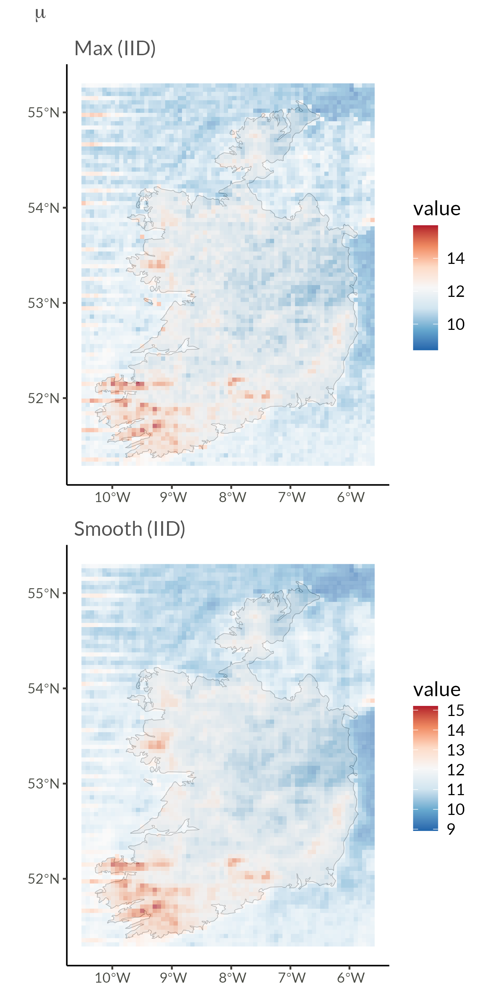
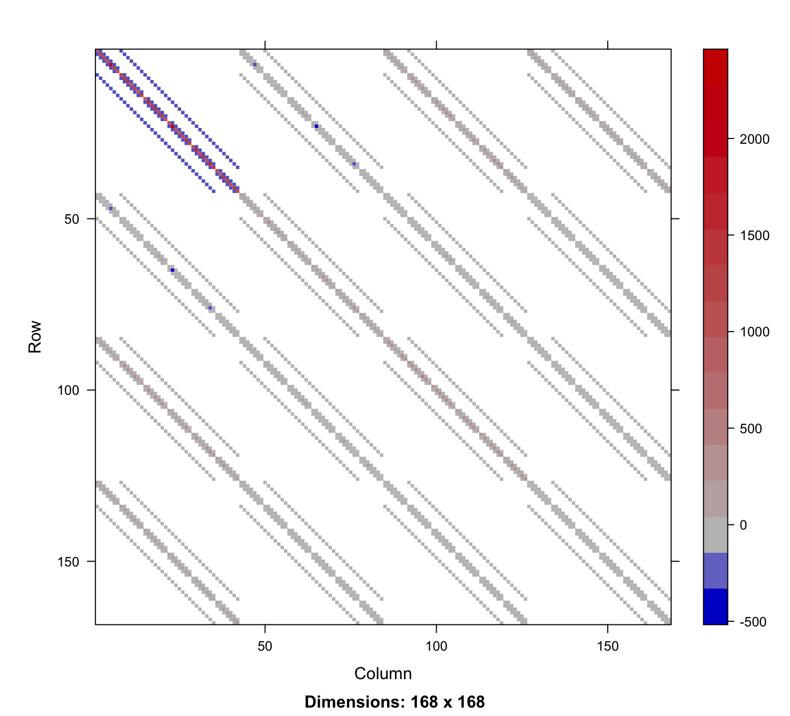

Large-Scale Approximate Bayesian Inference for Spatially Distributed Extreme Rainfall
Max-and-Smooth and Spatial Copulas
University of Iceland
Extreme Precipitation


- Climate Change Impact
- Increasing frequency of extreme events
- Higher intensity precipitation
- Sub-daily timescale impacts
- Modeling Challenges
- Complex spatial dependencies
- High-resolution requirements
- Non-stationary patterns
- Research Goals
- Efficient statistical methods
- Improved uncertainty quantification
- Scalable computational approach
Large Datasets
- UKCP Local Projections on a 5km grid over the UK (1980-2080) [3]
- Challenge: Modeling maximum daily precipitation in yearly blocks
- 43,920 spatial locations on a 180 x 244 grid
- Location-specific GEVt distributions
- Four parameters per location as in [4]
- Location, Trend, Scale, Shape
- Two aspects of spatial dependence:
- Parameter-level (Latent Gaussian Models)
- Data-level (Copulas)

Latent Gaussian Models (LGMs)
- Three-level hierarchy
- Data: \(y\mid \eta,\theta\sim\pi(y\mid\eta,\theta)\)
- Latent field: \(\eta\mid\theta\sim\mathcal N\bigl(\mu(\theta),\Sigma(\theta)\bigr)\)
- Hyper-parameters: \(\theta\sim\pi(\theta)\)
- Data: \(y\mid \eta,\theta\sim\pi(y\mid\eta,\theta)\)
- Structured additive predictor
\[ \eta_i=\beta_0+\textstyle\sum_k \beta_k z_{i,k}+\sum_j u_j a_{i,j}+\varepsilon_i \] - Why LGMs? Massive dimensionality, yet fast inference via sparsity and conjugacy.
LGMs: A Concrete Example
- GEV model for precipitation extremes
- Data: \(y_i \mid \mu_i, \sigma, \xi \sim \text{GEV}(\mu_i, \sigma, \xi)\)
- Latent field: \(\eta = (\log \mu_1, \ldots, \log \mu_n)^\top \sim \mathcal{N}(\boldsymbol{\mu}(\theta), \mathbf{Q}^{-1}(\theta))\)
- Hyper-parameters: \(\theta =\) e.g. mean, range, variance, spatial correlation
- Data: \(y_i \mid \mu_i, \sigma, \xi \sim \text{GEV}(\mu_i, \sigma, \xi)\)
- Structured additive predictor for location parameter
\[ \log(\mu_i) = \beta_0 + \beta_1 \text{elevation}_i + \beta_2 \text{trend}_i \cdot \text{year} + u_{\text{region}[i]} + \varepsilon_i \] - Why this matters: Location-specific location parameter with spatial dependence, while maintaining computational tractability for 43,920 locations.
Extended LGMs — multivariate link functions
- Need to model several distributional parameters jointly (e.g., location, scale and shape in GEV).
- Define vector link \(g:\mathcal D\to\mathbb R^M\)
\[g(\psi_i) = (\eta_{1,i},\dots,\eta_{M,i})^\top\] - Each component uses its own fixed/random-effect design:
\[\eta_{m} = X_m\beta_m + A_m u_m + \varepsilon_m,\quad m=1,\dots,M\] - Greatly increases flexibility for spatio-temporal extremes and joint risk metrics.
Extended LGMs - GEV Example
- Joint GEV model for precipitation extremes
- Data: \(y_i \mid \mu_i, \sigma_i, \xi_i \sim \text{GEV}(\mu_i, \sigma_i, \xi_i)\)
- Latent field: \(\boldsymbol\eta_i = \begin{pmatrix} (\psi_1, \tau_1, \phi_1)^\intercal \\ \vdots \\ (\psi_n, \tau_n, \phi_n)^\intercal \end{pmatrix} \sim \mathcal{N}(\boldsymbol{\mu}(\theta), \mathbf{Q}^{-1}(\theta))\)
- Hyper-parameters: \(\theta =\) e.g. mean, range, variance, spatial correlation
- Data: \(y_i \mid \mu_i, \sigma_i, \xi_i \sim \text{GEV}(\mu_i, \sigma_i, \xi_i)\)
Max-and-Smooth — big picture
- Goal: accurate but fast Bayesian inference for (extended) LGMs with many replicates.
- Two stages
- Max: approximate each location-specific likelihood by a Gaussian.
- Smooth: fuse those Gaussian pseudo-observations with the latent GMRF prior.
- Max: approximate each location-specific likelihood by a Gaussian.
- Good when each group/location has many replicates (MLE asymptotically Gaussian)
Max step — Gaussian likelihood surrogate
- Loop over locations: estimate GEV parameters and observed information (Hessian) at each site
- For each location \(i\):
- Find MLE \(\hat\eta_i\) and observed information \(I_{\eta_i y_i}\).
\[ \hat L(\eta_i\mid y_i)=\mathcal N\!\bigl(\eta_i\mid\hat\eta_i,\;I_{\eta_i y_i}^{-1}\bigr) \]
- Find MLE \(\hat\eta_i\) and observed information \(I_{\eta_i y_i}\).
- Gather all MLEs into vector \(\hat \eta\) arrange Hessians into \(Q_{\eta y}\)
Smooth step — Gaussian–Gaussian posterior
Hierarchical pseudo-model \[ \begin{aligned} \hat\eta &\mid \eta \;\sim\; \mathcal N\bigl(\eta, Q_{\eta y}^{-1}\bigr) \\ \eta &\mid \nu \;\sim\; \mathcal N\bigl(Z\nu, Q_\varepsilon^{-1}\bigr) \\ \nu &\mid \theta \;\sim\; \mathcal N\bigl(\mu_\nu, Q_\nu^{-1}\bigr). \end{aligned} \]
- Data-level likelihood uses MLEs and estimated Hessians
- Latent level applies spatial smoothing
Max-and-Smooth
Two-Step Approach
- Max Step: Maximum Likelihood
- Independent local estimates \(\hat{\eta}_i\)
- Asymptotic normality: \[ \hat{\eta}_i \stackrel{a}{\sim} N(\eta_i, \mathbf{Q}_{\eta y,i}^{-1}) \]
- Observed information matrix \(\mathbf{Q}_{\eta y,i} = -\nabla^2\ell_i(\hat{\eta}_i)\)
- Smooth Step: Spatial Model
- Gaussian approximation: \[ \hat{\eta} \mid \eta \sim N(\eta, \mathbf{Q}_{\eta y}^{-1}) \]
- Latent field prior: \[ \eta \mid \theta \sim N(\boldsymbol \mu(\theta), \mathbf{Q}_\eta(\theta)^{-1}) \]
- Hyperprior: \(p(\theta)\)
Posterior: The joint posterior distribution becomes:
\[ p(\eta, \theta \mid \hat{\eta}) \propto p(\hat{\eta} \mid \eta)p(\eta \mid \theta)p(\theta) \]
where \(\eta\) is the latent field, \(\theta\) are hyperparameters, and \(\hat{\eta}\) are the local MLEs.
Computational Implementation
Efficient Two-Stage Implementation
Max Step (TMB)
- Template Model Builder [5] for maximum likelihood
- Automatic differentiation
- Parallel processing of station-wise estimates
- Efficient sparse Hessians
Smooth Step (Stan)
- Full Bayesian posterior via HMC [6]
- BYM2 spatial prior implementation
- Scales well to large number of parameters
- Use
csr_times_vector()for data-level likelihood
- Get MLEs and Hessians from TMB
- Pass \(\hat \eta\) and CSR version of \(L_{\eta y}\) into Stan
- Stan gives full posterior of Gaussian-Gaussian model
Max vs. Smooth




From Data-level Independence to Dependence
Parameter-level Dependence
- Assumes conditional independence
- Biased joint probability estimates
- Underestimates parameter variance
Copula
- Improves joint probabilities
- Enhances spatial risk assessment
- Better variance estimates
Sklar’s Theorem: For any multivariate distribution \(H\), there exists a unique copula \(C\) such that:
\[ H(\mathbf x) = C(F_1(x_1), \dots, F_d(x_d)) \]
where \(F_i\) are marginal distributions. We can also write this as a density
\[ h(x) = c(F_1(x_1), \dots, F_d(x_d)) \prod_{i=1}^d f_i(x_i) \]
Matérn-like Gaussian Copula
\[ \begin{gathered} \log h(\mathbf x) = \log c\left(F_1(x_1), \dots, F_d(x_d)\right) + \sum_{i=1}^d \log f_i(x_i) \end{gathered} \]
Marginal CDFs
- \(F_i(x_i)\) is \(\mathrm{GEV}(\mu_i, \sigma_i, \xi_i)\)
- Can model parameter dependence with BYM2
\[ \begin{aligned} \log h(\mathbf x) &= \log c(u_1, \dots, u_d) \\ &+ \sum_{i=1}^d \log f_{\mathrm{GEV}}(x_i \vert \mu_i, \sigma_i, \xi_i) \\ u_i &= F_{\mathrm{GEV}}(x_i \vert \mu_i, \sigma_i, \xi_i) \end{aligned} \]
Gaussian Copula
- Matérn-like precision matrix \(\mathbf{Q}\) [7]
- If \(\mathbf{Q} = \mathbf{I}\) simplifies to independent margins
- Scaled so \(\boldsymbol{\Sigma} = \mathbf{Q}^{-1}\) is correlation matrix
- Need to calculate marginal variances [8–10]
- How to generate, scale and compute with \(\mathbf{Q}\) quickly (for MCMC)?
\[ \begin{aligned} \log c(\mathbf u) &\propto \frac{1}{2}\left(\log |\mathbf{Q}| - \mathbf{z}^T\mathbf{Q}\mathbf{z} + \mathbf{z}^T\mathbf{z}\right) \\ \mathbf{z} &= \Phi^{-1}(\mathbf u) \end{aligned} \]
The Precision Matrix
\(\mathbf Q\) defined as Kronecker sum of two AR(1) precision matrices, similar to [7]
\[ \mathbf{Q} = \left( \mathbf{Q}_{\rho_1} \otimes \mathbf{I_{n_2}} + \mathbf{I_{n_1}} \otimes \mathbf{Q}_{\rho_2} \right)^{\nu + 1}, \quad \nu \in \{0, 1, 2\} \]
\[ \mathbf{Q}_{\rho_{1}} = \frac{1}{1-\rho_{1}^2} \begin{bmatrix} 1 & -\rho_{1} & 0 & \cdots & 0 \\ -\rho_{1} & 1+\rho_{1}^2 & -\rho_{1} & \cdots & 0 \\ 0 & -\rho_{1} & 1+\rho_{1}^2 & \cdots & 0 \\ \vdots & \vdots & \vdots & \ddots & \vdots \\ 0 & 0 & 0 & \cdots & 1 \end{bmatrix} \]
\[ \mathbf{Q}_{\rho_{2}} = \frac{1}{1-\rho_{2}^2} \begin{bmatrix} 1 & -\rho_{2} & 0 & \cdots & 0 \\ -\rho_{2} & 1+\rho_{2}^2 & -\rho_{2} & \cdots & 0 \\ 0 & -\rho_{2} & 1+\rho_{2}^2 & \cdots & 0 \\ \vdots & \vdots & \vdots & \ddots & \vdots \\ 0 & 0 & 0 & \cdots & 1 \end{bmatrix} \]
\[ \mathbf Q = \begin{bmatrix} \frac{1}{(1-\rho_1^2)}\mathbf{I_{n_2}} + \mathbf{Q_{\rho_2}} & \frac{-\rho_1}{(1-\rho_1^2)}\mathbf{I_{n_2}} & \dots & \cdots & \dots \\ \frac{-\rho_1}{(1-\rho_1^2)}\mathbf{I_{n_2}} & \frac{(1+\rho_1^2)}{(1-\rho_1^2)}\mathbf{I_{n_2}} + \mathbf{Q_{\rho_2}} & \frac{-\rho_1}{(1-\rho_1^2)} \mathbf{I_{n_2}} & \cdots & \vdots \\ \vdots & \ddots & \ddots & \ddots & \vdots \\ \dots & \dots & \cdots & \frac{-\rho_1}{(1-\rho_1^2)} \mathbf{I_{n_2}} & \frac{1}{(1-\rho_1^2)}\mathbf{I_{n_2}} + \mathbf{Q_{\rho_2}} \end{bmatrix}^{\nu + 1} \]
Connection to SPDE approach [7]
- Continuous SPDE
A Matérn field \(x(\mathbf{s})\) in continuous space is a solution to
\[ (\kappa^2 - \Delta)^{\alpha/2}\,x(\mathbf{s}) \;=\; \mathcal{W}(\mathbf{s}), \] where \(\Delta = \frac{\partial^2}{\partial x^2} + \frac{\partial^2}{\partial y^2}\) is the Laplacian operator, and \(\alpha\) controls smoothness.
- Discretizing on a Regular Grid
- In 2D, \(\Delta\) on a \(n_1 \times n_2\) grid becomes a Kronecker sum of 1D difference operators: \[ \Delta_ \;\approx\; \mathbf{L}_{1D}^{(x)} \otimes \mathbf{I}_{n_2} \;+\; \mathbf{I}_{n_1} \otimes \mathbf{L}_{1D}^{(y)}. \]
- \(\mathbf{L_{1D}}\) is a second difference matrix \[ \mathbf{L}_{1D} = \begin{bmatrix} -2 & 1 & 0 & \cdots & 0 \\ 1 & -2 & 1 & \cdots & 0 \\ 0 & 1 & -2 & \cdots & 0 \\ \vdots & \vdots & \vdots & \ddots & \vdots \\ 0 & 0 & 0 & \cdots & -2 \end{bmatrix} \]
Eigendecomposition
Because of how \(\mathbf{Q}\) is defined [11], we know that
\[ \begin{aligned} \mathbf{Q} &= \mathbf{V}\boldsymbol{\Lambda}^{\nu + 1}\mathbf{V} \\ &= (\mathbf{V_{\rho_1}} \otimes \mathbf{V_{\rho_2}})(\boldsymbol \Lambda_{\rho_1} \otimes \mathbf{I} + \mathbf{I} \otimes \boldsymbol \Lambda_{\rho_2})^{\nu + 1}(\mathbf{V_{\rho_1}} \otimes \mathbf{V_{\rho_2}})^T \end{aligned} \]
where
\[ \begin{aligned} \mathbf{Q}_{\rho_1} = \mathbf{V_{\rho_1}}\boldsymbol \Lambda_{\rho_1}\mathbf{V_{\rho_1}}^T \qquad \& \qquad \mathbf{Q}_{\rho_2} = \mathbf{V_{\rho_2}}\boldsymbol \Lambda_{\rho_2}\mathbf{V_{\rho_2}}^T \end{aligned} \]
Spectral decomposition defined by value/vector pairs of smaller matrices
\[ \left\{\lambda_{\rho_1}\right\}_i + \left\{\lambda_{\rho_2}\right\}_j \]
\[ \left\{\mathbf{v}_{\rho_1}\right\}_i \otimes \left\{\mathbf{v}_{\rho_2}\right\}_j \]
- Problem: \(\boldsymbol \Sigma_{ii} = \left(\mathbf Q^{-1} \right)_{ii} \neq 1\)
- Solution: \(\mathbf{\widetilde Q} = \mathbf{D}\mathbf{Q}\mathbf{D}\), where \(\mathbf D_{ii} = \sqrt{\boldsymbol \Sigma_{ii}}\)
Marginal Standard Deviations
\[ \boldsymbol \Sigma = \mathbf Q^{-1} = (\mathbf{V}\boldsymbol\Lambda\mathbf{V}^T)^{-1} = \mathbf{V}\boldsymbol \Lambda^{-1}\mathbf{V} \]
We know that if \(A = BC\) then \(A_{ii} = B_{i, .} C_{., i}\), so
\[ \boldsymbol \Sigma_{ii} = \sum_{k=1}^{n} v_{ik} \frac{1}{\lambda_k} (v^T)_{ki} = \sum_{k=1}^{n} v_{ik} \frac{1}{\lambda_k} v_{ik} = \sum_{k=1}^{n} v_{ik}^2 \frac{1}{\lambda_k} \]
Let \(\left\{\lambda\right\}_{ij} = \left\{\lambda_{\rho_1}\right\}_i + \left\{\lambda_{\rho_2}\right\}_j\) and \(\left\{\mathbf{v}\right\}_{ij} = \left\{\mathbf{v}_{\rho_1}\right\}_i \otimes \left\{\mathbf{v}_{\rho_2}\right\}_j\). Compute vector \(\boldsymbol \sigma^2\) containing all marginal variances
\[ \boldsymbol \sigma^2 = \sum_{i = 1}^{n_1} \sum_{j=1}^{n_2} \frac{1}{\left\{\lambda\right\}_{ij}} \cdot \left\{\mathbf{v}\right\}_{ij} \odot \left\{\mathbf{v}\right\}_{ij} \]
Marginal Standard Deviations
bench::mark(
"solve" = solve(Q) |> diag() |> sqrt() |> sort(),
"inla.qinv" = inla.qinv(Q) |> diag() |> sqrt() |> sort(),
"marginal_sd_eigen" = msd(Q1, Q2),
iterations = 10,
filter_gc = FALSE
)# A tibble: 3 × 6
expression min median `itr/sec` mem_alloc `gc/sec`
<bch:expr> <bch:tm> <bch:tm> <dbl> <bch:byt> <dbl>
1 solve 1.28s 1.3s 0.769 78.17MB 0.769
2 inla.qinv 450.08ms 461.9ms 2.01 4.35MB 0
3 marginal_sd_eigen 1.61ms 1.7ms 525. 648.97KB 0 Calculating the (non-copula) density
The Gaussian log pdf is \[ \log f(\mathbf{z} \vert \mathbf{Q}) = \frac{1}{2}\left(\log|\mathbf{Q}| - \mathbf{z}^T\mathbf{Q}\mathbf{z}\right) + \mathrm{constant} \]
Without scaling of \(\mathbf Q\) we get
\[ \log|\mathbf{Q}| = \sum_{k=1}^{n_1n_2}\log\lambda_k = \sum_{i=1}^{n_1}\sum_{j=2}^{n_2} \log\left[\left(\left\{\lambda_{\rho_1}\right\}_i + \left\{\lambda_{\rho_2}\right\}_j\right)^{\nu + 1}\right] \]
\[ \mathbf{z}^T\mathbf{Q}\mathbf{z} = \sum_{k=1}^{n_1n_2}\lambda_k \left(v_k^T\mathbf z\right)^2 = \sum_{i=1}^{n_1}\sum_{j=2}^{n_2} \left(\left\{\lambda_{\rho_1}\right\}_i + \left\{\lambda_{\rho_2}\right\}_j\right)^{\nu + 1} \left[\left(\left\{\mathbf{v}_{\rho_1}\right\}_i \otimes \left\{\mathbf{v}_{\rho_2}\right\}_j\right)^T\mathbf z\right]^2 \]
Calculating the copula density
Let \(\mathbf v = \left\{\mathbf{v}_{\rho_1}\right\}_i \otimes \left\{\mathbf{v}_{\rho_2}\right\}_j\) and \(\lambda = \left(\left\{\lambda_{\rho_1}\right\}_i + \left\{\lambda_{\rho_2}\right\}_j\right)^{\nu + 1}\). Normalise \(\mathbf v\) and \(\lambda\) with
\[ \begin{gathered} \widetilde{\mathbf{v}} = \frac{\sigma \odot \mathbf{v}}{\vert\vert \sigma \odot\mathbf{v}\vert\vert_2}, \qquad \widetilde{\lambda} = \vert\vert \sigma \odot\mathbf{v}\vert\vert_2^2 \cdot \lambda \end{gathered} \]
Then \(\widetilde{\mathbf{v}}\) and \(\widetilde{\lambda}\) are an eigenvector/value pair of the scaled precision matrix \(\mathbf{\widetilde{Q}}\). Iterate over \(i\) and \(j\) to calculate
\[ \log c(\mathbf{z} \vert \mathbf{\widetilde{Q}}) = \frac{1}{2}\log|\mathbf{\widetilde Q}| - \frac{1}{2}\mathbf{z}^T\mathbf{\widetilde Q}\mathbf{z} + \frac{1}{2}\mathbf{z}^T\mathbf{z} \]
Maximum Likelihood
Setup
Log-likelihood
log_lik <- function(par, Y) {
mu <- exp(par[1])
sigma <- exp(par[2] + par[1])
xi <- exp(par[3])
rho1 <- plogis(par[4]); rho2 <- plogis(par[5])
u <- evd::pgev(Y, loc = mu, scale = sigma, shape = xi)
z <- qnorm(u)
ll_marg <- sum(evd::dgev(Y, loc = mu, scale = sigma, shape = xi, log = TRUE))
ll_copula <- sum(dmatern_copula_eigen(z, dim1, dim2, rho1, rho2, nu))
ll_copula + ll_marg
}Optimize
Copula-Extended Max-and-Smooth
Three-Step Approach with Spatial Dependence
- Copula Step: Copula Parameters
- Estimate copula parameters \((\rho_1, \rho_2)\) using empirical CDF
- Max Step: Copula-Based Likelihood
- Joint estimation across replicates (not locations): \[ \ell(\theta|Y) = \sum_{t=1}^T \left[\ell_{\text{GEV}}(Y_{t}) + \ell_{\text{copula}}(Z_t)\right] \]
- Where \(Z_t = \Phi^{-1}(F_{\text{GEV}}(Y_t))\)
- Precision matrix \(\mathbf{Q}\) with parameters \(\rho_1, \rho_2, \nu\)
- Smooth Step: Enhanced Spatial Model
- Unchanged Gaussian approximation: \[ \hat{\eta} \mid \eta \sim N(\eta, \mathbf{Q}_{\eta y}^{-1}) \]
- Now \(\mathbf{Q}_{\eta y}\) includes dependence information from copula
- Parameter-level spatial priors: \[ \eta \mid \theta \sim N(0, \mathbf{Q}_\eta(\theta)^{-1}) \]
Hessians

Computational Implementation
Efficient Three-Stage Implementation
Copula Step (recently finished)
- Use
eigenin C++ for efficient calculations as shown before
Max Step (TMB)
- Template Model Builder [5] for maximum likelihood
- Automatic differentiation
- Parallel processing of station-wise estimates
- Efficient sparse Hessians
Smooth Step (Stan)
- Full Bayesian posterior via HMC [6]
- BYM2 spatial prior implementation
- Scales well to large number of parameters
- Use
csr_times_vector()for data-level likelihood
- Estimate copula parameters using R package in development
- Get MLEs and Hessians from TMB
- Pass \(\hat \eta\) and CSR version of \(L_{\eta y}\) into Stan
- Stan gives full posterior of Gaussian-Gaussian model
Results

Summary and Conclusions
Methodology
- Copula-Extended Latent Gaussian Models
- Matérn-like Gaussian copula implementation
- Max-and-Smooth for fast large-scale inference
Computational Implementation
- Three-stage pipeline combining specialized tools:
- Copula parameter estimation
- TMB for ML and sparse Hessians
- Stan for fast Gaussian-Gaussian posterior sampling
Future Direction
- Application to full UKCP Local Projections (5km grid)
- Extension to linear predictors and space-time dependence
- t-copula for tail dependence
- Integration with risk assessment frameworks
- Further software development and R package release